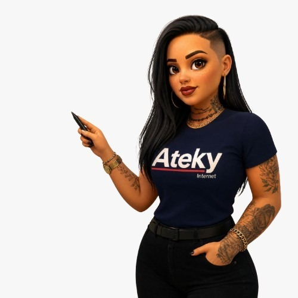

Programa de Atendimento
com Visão 360º
Aumentar a retenção em apenas 5% pode elevar o lucro líquido da operação de 25% a 95%. Cada cliente que cancela por experiência fraturada no suporte é investimento jogado fora. Este treinamento ensina como transformar o atendimento diário em retenção real, consistência e fidelização definitiva.
Mapa de Aprendizado • O que você vai dominar
Por que a Ateky está rasgando dinheiro
Conquistar cliente novo custa caro. Perder quem já foi conquistado por falha de experiência no suporte é prejuízo direto.
A Verdade Nua e Crua da Operação
Quando a experiência no suporte é fraturada, o cliente se transforma em detrator. Quando o atendimento entrega apenas o protocolo burocrático, ele continua vulnerável a qualquer oferta da concorrência. Mas quando o atendimento resolve com agilidade, empatia e clareza, ele se torna um Brand Lover — um defensor leal da Ateky. A diferença entre rasgar receita e multiplicar lucro está na postura que a equipe assume em cada contato.
O impacto real da retenção no lucro
Não se trata de retórica corporativa. É cálculo financeiro rigoroso.
Princípio Comprovado de Gestão
Aumentar a taxa de retenção em apenas 5% faz o lucro aumentar de 25% a 95%. Isso ocorre porque o cliente que permanece na base continua gerando receita recorrente com custo operacional decrescente, já teve seu investimento de instalação amortizado e gera indicações orgânicas de alto valor para a Ateky.
Gera receita mensal previsível, recomenda o provedor para o seu círculo de convivência e não consome novos custos de aquisição ou publicidade.
Cada mês a mais de permanência multiplica diretamente o valor de vida do cliente (LTV) dentro da Ateky.
Leva embora o custo investido na equipe comercial, taxa de instalação, suporte de campo e equipamentos de fibra que poderiam estar gerando resultado.
Além da perda de receita, o atrito não resolvido mancha a reputação regional da operadora.
O atendimento ao cliente e o suporte técnico são os principais pontos de contato durante toda a vida útil do contrato.
É nessa linha de frente que a lealdade é construída ou destruída. Todo chamado é uma oportunidade explícita de retenção ou perda de receita.
A Fórmula da Expectativa • Experiência do Cliente
Entenda a regra fundamental que dita o sucesso ou o fracasso de qualquer relacionamento com o cliente.
A experiência que o cliente percebe nunca é avaliada no vácuo; ela é sempre o resultado exato entre o que ele esperava receber versus o que a equipe efetivamente entregou.
Se a expectativa foi alta e a entrega foi confusa ou demorada, a nota será negativa — mesmo que o sinal técnico tenha sido restabelecido.
Vendas, marketing, suporte e atendimento de campo precisam falar o mesmo idioma e calibrar a mesma régua de compromisso.
Regra de ouro: Nunca prometa prazos ou soluções que a operação interna não seja capaz de cumprir com consistência diária.
Superar expectativas de maneira isolada eleva a régua do cliente a patamares insustentáveis. O que surpreende hoje vira a obrigação mínima de amanhã.
A prioridade absoluta do atendimento Ateky deve ser a excelência consistente no básico: agilidade, empatia, escuta ativa e solução sem enrolação.
Metodologia TBC • Tira a Bunda da Cadeira
O princípio mais importante para parar de desenhar a experiência de dentro para fora.
O Maior Erro no Atendimento ao Cliente
Ficar fechado na sala com ar-condicionado, olhar apenas para os dados na tela do sistema e supor que sabe o que o cliente valoriza. Essa desconexão gera procedimentos engessados que não resolvem a dor real, aumentam o tempo de atendimento e provocam cancelamentos previsíveis.
Vá vivenciar a jornada real de quem usa a internet da Ateky. Ouça gravações de chamados difíceis, converse com quem cancelou e entenda a aflição de quem depende do sinal para trabalhar em home office ou estudar.
O que é valor legítimo para quem contrata a Ateky? Velocidade no papel? Não: é estabilidade, rapidez na resposta, clareza quando ocorre uma oscilação e segurança de que não será desamparado.
Todo fluxo de triagem, toda mensagem de WhatsApp e toda postura ao telefone deve nascer da perspectiva do cliente — e não da conveniência administrativa da operação.
O que é valor para o cliente da Ateky
Se a equipe não souber exatamente o que o cliente valoriza, torna-se impossível retê-lo.
O tempo é o recurso mais precioso das pessoas no mundo moderno. Empresas que economizam o tempo do cliente ganham lealdade imediata. No atendimento de telecomunicações, isso significa: diagnóstico rápido, linguagem acessível e resolução sem fazer o cliente repetir a mesma história.
O cliente não entrou em contato para conversar; ele quer restabelecer a rotina dele. Cada minuto de espera sem retorno ou cada transferência entre atendentes é percebido como descaso.
O cliente não precisa entender o que é PON, LOS, OLT ou atenuação óptica. Ele precisa de uma explicação humana, direta e compreensível sobre o que está acontecendo e em quanto tempo voltará.
Saber que o problema foi assumido por alguém competente que vai acompanhar o caso até o desfecho. A certeza de “eu estou cuidando disso por você” retém muito mais do que qualquer desconto temporário.
5 Situações reais de insatisfação no suporte
Como a falha de experiência acontece na prática — e a postura recomendada para virar o jogo.
“Já liguei três vezes e ninguém resolve meu problema!”
O cliente retorna com a mesma falha após poucas horas ou dias. A equipe trata o contato como se fosse uma primeira ligação, fazendo as mesmas perguntas básicas. O cliente sente revolta e conclui que a empresa é desorganizada.
Reconhecimento Imediato do Histórico
Antes de saudar o cliente, leia as últimas notas do sistema. Valide a frustração dele com firmeza e empatia.
“Toda vez que eu ligo, só sabem mandar eu desligar o roteador!”
O cliente já reiniciou o equipamento diversas vezes antes de chamar. A orientação mecânica e padronizada passa a impressão de que o atendente é um robô desinteressado.
Investigação Técnica Personalizada
Pergunte antes de comandar. Demonstre interesse investigativo real sobre o comportamento da rede na casa do cliente.
“Fiquei 20 minutos esperando no chat e ninguém me respondia.”
O atendente abre o sistema para testar parâmetros ou consultar a supervisão e esquece de avisar o cliente. O silêncio prolongado gera sensação imediata de abandono e descaso.
Comunicação Ativa de Status
Mesmo que o teste leve tempo, dê sinal de vida a cada 90 a 120 segundos. Manter a presença desarma a ansiedade.
“Ficam me jogando de um setor para o outro e ninguém resolve.”
Transferir o atendimento sem registrar o que já foi apurado. O cliente cai em outro setor tendo que recomeçar toda a explicação do zero. É um dos maiores motivos de cancelamento com raiva.
Passagem de Bastão Completa
Documente o diagnóstico. Se precisar transferir, transfira com contexto para que o próximo colega continue o caso de onde parou.
“Disseram secamente que a fibra está boa e o problema é da minha TV.”
Frases que empurram o problema para longe do provedor geram sentimento de desamparo e incompetência técnica no cliente.
Acolhimento + Condução Amigável
Mostre que a rede está íntegra, mas auxilie o cliente a entender como resolver o dispositivo dele de maneira parceira.
De detrator a Brand Lover
A experiência que você entrega decide de qual lado o cliente vai jogar.
Experiência fraturada: sentiu descaso, falta de resposta ou foi tratado com frieza.
Cancela na primeira oportunidade, cobra rescisão, deixa reclamações e atua ativamente para impedir que outros contratem a Ateky.
Experiência morna: o problema foi resolvido, mas o atendimento foi burocrático e sem conexão humana.
Não reclama abertamente, mas não defende a marca e migra facilmente caso o concorrente ofereça 10 reais de desconto.
Experiência memorável: sentiu que o atendente se importou genuinamente com o problema dele e resolveu com agilidade.
Defende a Ateky para vizinhos, perdoa eventuais manutenções preventivas e permanece como assinante leal por longos anos.
O Propósito Central do Suporte Ateky
Nosso trabalho diário não é apenas “encerrar chamados no sistema”. É garantir que, ao desligar o telefone ou fechar o chat, o cliente pense com convicção: “Fui ouvido, fui respeitado e a equipe da Ateky fez de tudo para me ajudar”. Essa é a postura que estanca o cancelamento e sustenta o crescimento da empresa.
Experiência é um caminho sem volta
A régua de exigência do consumidor nunca recua.
A 4ª Dimensão Empresarial
No passado, as empresas competiam prioritariamente em duas dimensões: Financeiro e Tempo. Com a revolução digital, surgiu a terceira dimensão: a Tecnologia. Hoje, no entanto, todas as empresas têm acesso a tecnologia e equipamentos similares. A verdadeira vantagem competitiva está na quarta dimensão: A Experiência do Cliente (CX). Quem ignora a experiência é deixado para trás.
Há dez anos, esperar dias por uma visita técnica era tolerado. Hoje, o cliente espera diagnóstico em minutos e agendamento preciso. A tolerância para falhas diminui a cada ano.
A retenção não é “problema de um setor isolado”. Cada colaborador da Ateky — da recepção ao suporte, do técnico de campo ao faturamento — constrói a percepção da marca.
O mercado está repleto de discursos bonitos sobre qualidade. O que realmente define os líderes é a disciplina diária de execução com padrão e atenção aos mínimos detalhes.
O que nós fazemos em cada chamada e em cada mensagem no chat fala infinitamente mais alto do que qualquer slogan de qualidade.
Pilares Operacionais da Operação Ateky
Ferramentas práticas para a equipe de atendimento colocar a Visão 360º em ação imediata.
[F] Falar com empatia: Chamar o cliente pelo nome próprio no primeiro segundo.
[A] Acolher a dor: Validar o incômodo sem contestar ou desqualificar a queixa.
[L] Limpar dúvidas: Traduzir a situação técnica em linguagem simples e transparente.
[E] Encantar & Encaminhar: Garantir que o chamado tenha um dono responsável até o desfecho.
Todo cliente que aciona o suporte pela 2ª vez dentro de uma janela de 60 dias entra em Alerta Vermelho de Retenção.
O atendimento não pode ser genérico. O caso deve ser tratado como prioridade máxima para erradicar a instabilidade física ou de configuração de forma permanente.
Antes de sugerir qualquer intervenção física no roteador, execute o roteiro de 4 perguntas cirúrgicas:
- 1. A falha ocorre em todos os aparelhos ou em um só?
- 2. As luzes PON/LOS no equipamento estão piscando em vermelho?
- 3. O problema é constante ou acontece em horários específicos?
- 4. Houve queda de energia ou alteração de cabos recente?
Checklist de Excelência • Atendimento 360º
Marque os critérios a cada atendimento para auditar sua própria conformidade operacional.
Auditoria Rápida de Atendimento
Cada item marcado representa uma barreira a mais contra o cancelamento do cliente.
Márcia Cardoso
Técnica Especialista • Trainee Suporte N1 • Instrutora Oficial Ateky“Obrigada pelo seu comprometimento ao participar deste treinamento do Programa de Atendimento com Visão 360º. Cada vez que você escolhe ouvir de verdade, investigar com carinho e resolver com precisão, é a reputação e a saúde da Ateky que você está fortalecendo.”

Avalie Este Treinamento
Sua avaliação sincera é a nossa bússola para continuar aprimorando os programas de capacitação e a rotina do Centro de Soluções Ateky.